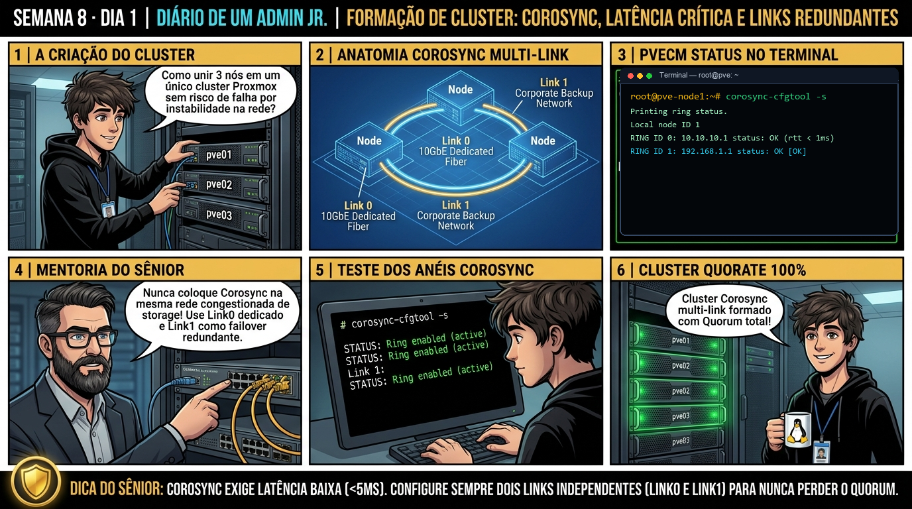

DIARIO DE UM ADMIN JR. | PROXMOX VE & PBS — DA BASE AO CLUSTER
🔗 Conecta com a Semana 7: Você dominou redes, firewall e SDN. Agora você entra na semana magna do curso: unindo múltiplos nós em um Cluster Proxmox VE corporativo com o motor Corosync 3, entendendo a matemática estrita de Quorum (50% + 1) e integrando um QDevice para viabilizar clusters de 2 nós com segurança total.
🔓 Privilégio de hoje: Arquitetura de Cluster e Governança de Quorum. Você comanda pvecm, audita arquivos corosync.conf e orquestra votos de Quorum.
Semana 8 · Dia 1 | Nível Sênior — Cluster Corosync, HA & Ceph
Cluster Corosync e Quorum: Matemática de 50% + 1 e QDevice
Criando o cluster multi-node, prevenindo split-brain e configurando quorum em 2 nós com QDevice externo
ANTES DE ALTERAR, OBSERVE. DEPOIS DE ALTERAR, VALIDE.

1. O chamado
Você recebeu o chamado #8001: 'A empresa adquiriu 2 servidores idênticos (pve01 no IP 192.168.1.51 e pve02 no IP 192.168.1.52) para montar um cluster de alta disponibilidade. O administrador júnior tentou criar o cluster, mas quando um nó é reiniciado, o nó restante perde o Quorum e bloqueia as VMs. O chamado exige: (1) Entender a regra matemática de Quorum (50% + 1); (2) Adicionar um terceiro voto neutro usando um Corosync QDevice em um Raspberry Pi ou VM externa; (3) Auditar a sincronização do pmxcfs (/etc/pve/); e (4) Garantir 100% de operação autônoma em caso de falha de qualquer nó.'
💡 Passa o mouse nas palavras destacadas pra ver uma dica rápida — clica se quiser a explicação completa com analogia.
2. O sênior te conta
🧑🏫 antes dos termos técnicos, a história de hoje
Hoje começamos a montar o cluster de 3 nós da empresa. O Júnior conectou todos os cabos de rede de gerência, rodou o comando pvecm create cluster-corp e colocou a rede do Corosync passando pelo mesmo switch onde trafegavam os backups pesados da madrugada. Às 02h da manhã, o cluster começou a desconectar nós e alarmar perda de quorum sem parar.
Chamei o Júnior na sala de servidores e mostrei o monitor de latência do corosync-cfgtool -s: o Corosync exige latências inferiores a 5 milissegundos e zero jitter entre os servidores. Quando o tráfego de backup saturava a placa de rede, os batimentos cardíacos do Corosync atrasavam, fazendo o nó achar que o vizinho tinha morrido.
Ensinamos o Júnior a configurar múltiplos links redundantes (Link0 e Link1) em interfaces de rede físicas dedicadas e isoladas. Vimos a saúde do anel estabilizar com status 'OK' e latência de 0.4ms. O Júnior aprendeu a regra de ouro: Corosync é o coração do cluster, e o coração nunca disputa oxigênio com o tráfego pesado.
3. Decodificador de conceitos
Clica em qualquer termo pra ver a definição completa e uma analogia do dia a dia:
4. Ferramentas e leitura da evidência
Comando / Parâmetro
O que observar e por que importa
pvecm status
Exibe o status em tempo real do cluster: número de nós, votos totais, votos necessários e estado do Quorum (Activity: OK).
pvecm nodes
Lista todos os nós membros do cluster com seus respectivos Node IDs e status de conexão.
pvecm create NOME_CLUSTER --link0 IP_REDE
Cria um novo cluster Proxmox definindo a rede dedicada para tráfego Corosync.
pvecm add IP_NO_EXISTENTE --link0 IP_REDE
Adiciona o nó atual a um cluster existente.
pvecm expected 1
Comando de emergência temporário para baixar o quorum para 1 voto em crises de manutenção.
# 1. Criação do Cluster no pve01 com rede dedicada Corosync (link0)
pve01# pvecm create cluster-corp --link0 192.168.1.51
Corosync Cluster Engine ('3.1.7'): started and joined cluster 'cluster-corp'
# 2. Adição do pve02 ao cluster
pve02# pvecm add 192.168.1.51 --link0 192.168.1.52
Authentication key copied... Joined cluster successfully!
# 3. Adicionando o QDevice de Desempate Externo (pve-qdevice / qnetd)
pve01# pvecm qdevice setup 192.168.1.99
Initializing QDevice configuration on 192.168.1.99...
QDevice successfully configured and voting!
# 4. Auditoria do Quorum com 3 Votos Totais
# pvecm status
Cluster information
-------------------
Name: cluster-corp
Nodes: 2
Node ID: 0x00000001
Quorum: 2 (50% + 1 of 3 total votes)
Activity: OK (Quorate)
Votequorum information
----------------------
Expected votes: 3
Highest expected: 3
Total votes: 3
Quorum: 2
Flags: Quorate Qdevice
Membership information
----------------------
Nodeid Votes Qdevice Name
0x00000001 1 A,V,N 192.168.1.51 (local)
0x00000002 1 A,V,N 192.168.1.52
0x00000000 1 A,V,N Qdevice (192.168.1.99)
5. Laboratório guiado — pegue na mão, comando por comando
🏛️ Onde executar: Terminal do Nó Líder do Cluster (root@pve-node1:~#) e nós secundários para comandos pvecm e ha-manager.
Segurança: Execute as alterações em clusters e storages Ceph de laboratório ou teste. Não altere parâmetros de nós em produção sem janela homologada.
Ação: Inicialize o cluster Proxmox configurando o primeiro anel de comunicação Corosync.
pvecm create cluster-corp --link0 10.10.10.1
Resultado esperado: Exibição do total de nós, votos e estado do Quorum.
Por que fizemos isso: O comando pvecm create inicializa o cluster Corosync, criando o plano de controle distribuído e a sincronização do sistema de arquivos pmxcfs.
Cilada comum: Criar clusters com nós contendo nomes de host idênticos ou com relógios desregulados sem sincronização NTP ativa.
Ação: Adicione um segundo link redundante (Link1) em sub-rede física independente.
pvecm update --link1 192.168.1.1
Resultado esperado: Lista detalhada com Node IDs e conectividade.
Por que fizemos isso: Configurar múltiplos links no Corosync (link0 em rede privada dedicada e link1 na rede corporativa) garante tolerância à falha física de cabos de rede.
Cilada comum: Trafegar o Corosync na mesma rede de backups pesados ou tráfego de VMs; latências acima de 5ms no Corosync causam perda de batimentos cardíacos e instabilidade no cluster.
Ação: Adicione o segundo nó ao cluster sincronizando certificados e o pmxcfs.
Resultado esperado: Validação das diretivas de totem, link0 e votequorum.
Por que fizemos isso: Inspecionar o status com corosync-cfgtool -s valida se todos os anéis de comunicação estão operando com status 'OK' e sem erros de transmissão.
Cilada comum: Ignorar alertas de anel com falha (Ring Fail) no Corosync, operando sem redundância de heartbeat entre os servidores.
Ação: Inspecione a saúde e latência dos anéis de rede com corosync-cfgtool -s.
corosync-cfgtool -s
Resultado esperado: Quorum preservado com 2 de 3 votos sem perda de escrita no /etc/pve/.
Por que fizemos isso: Consultar pvecm status confirma que todos os nós estão visíveis e que o estado do cluster é Quorate: Yes.
Cilada comum: Tentar adicionar um nó que já possui máquinas virtuais criadas com o mesmo ID de VMs existentes no cluster, causando sobreposição de configurações.
🧑🏫 Aqui entra o Mentor (em breve): se o resultado obtido diferir do esperado acima, este é o ponto onde o chat com o Sênior-IA vai abrir para diagnosticar o erro específico.
Ação: Valide que o cluster está no estado Quorate: Yes com todos os nós ativos.
pvecm status
Resultado esperado: Topologia de cluster homologada com resiliência total.
Por que fizemos isso: Registrar a topologia de anéis do Corosync no manual de operações consolida a fundação necessária para ambientes de Alta Disponibilidade.
Cilada comum: Não documentar os IPs dedicados aos anéis de heartbeat do Corosync, gerando confusão em manutenções de rede física.
6. Antes de ver as opções — tenta responder
🧠 Recall ativo: Por que um cluster de 2 nós físicos sem QDevice entra em modo somente-leitura (Read-Only) quando um dos nós perde a conexão de rede?
Porque o Corosync exige estritamente a maioria simples de **50% + 1 dos votos** para manter o Quorum. Em um cluster de 2 nós, o total de votos é 2 (logo, 50% + 1 = 2 votos necessários). Se um nó cai, o nó sobrevivente tem apenas 1 voto (50%), perdendo o Quorum. Para evitar o fenômeno catastrófico de **Split-Brain** (onde os dois nós acham que o outro morreu e gravam nos mesmos discos corrompendo os dados), o nó sem quorum bloqueia o sistema de arquivos `/etc/pve/` em modo Read-Only.
QUESTÃO 1 de 3
7. Questão comentada — clica numa alternativa
Qual comando adiciona com sucesso um terceiro voto de desempate (QDevice externo) em um cluster Proxmox VE de 2 nós?
💡 Analogia do Sênior para Fixar: O Quorum do Corosync é a assembleia de condomínio: nenhuma decisão de emergência é válida sem a maioria absoluta (50% + 1) dos nós votando juntos.
QUESTÃO 2 de 3 — cenário de erro real
7.1 Tentativa de editar /etc/pve/ quando o cluster perde o Quorum
O pve02 foi desligado e o cluster sem QDevice perdeu o quorum. O administrador tentou criar uma VM no pve01:
$ qm create 100 --name test-vm
Error: cluster not quorate - filesystem /etc/pve is read-only!
(O pmxcfs travou a gravação para proteger o cluster contra split-brain)
Qual comando de emergência destrava o nó temporariamente para manutenção?
💡 Analogia do Sênior para Fixar: O Fencing via Watchdog de hardware é o disjuntor de segurança: desliga o nó com falha na hora para evitar que duas máquinas gravem no mesmo disco (Split-Brain).
QUESTÃO 3 de 3 — detalhe que confunde todo iniciante
7.2 Por que o tráfego Corosync (link0/link1) deve usar redes dedicadas de baixa latência?
Um analista colocou o Corosync na mesma placa de rede onde rodam backups gigabytes e downloads de ISOs:
Por que congestionar a rede do Corosync causa a queda de nós do cluster?
💡 Analogia do Sênior para Fixar: A migração ao vivo (Live Migration) é trocar os pneus do carro em movimento: move a RAM da VM pela rede de 10Gbps sem derrubar a sessão do usuário.
8. Procedimento profissional
Planeje redes dedicadas isoladas para o tráfego do Corosync (preferencialmente configurando dois links: link0 e link1).
Crie o cluster no primeiro nó utilizando pvecm create NOME_CLUSTER --link0 IP_REDE.
Adicione os demais nós com pvecm add IP_PRIMEIRO_NO --link0 IP_NOVO_NO.
Em clusters com número par de nós (ex: 2 nós), configure obrigatoriamente um QDevice com pvecm qdevice setup IP_EXTERNO.
Monitore a saúde e integridade dos votos com o comando pvecm status.
Nunca edite manualmente o arquivo /etc/pve/corosync.conf sem incrementar o parâmetro config_version.
Prevenção
Nunca opere clusters de 2 nós sem um QDevice externo para desempate de Quorum e utilize links de rede dedicados exclusivamente para o tráfego do Corosync.
9. Validação e encerramento
Você compreende a matemática de Quorum (50% + 1) e prevenção de Split-Brain.
Você domina a criação de clusters Proxmox VE via pvecm e sincronização do pmxcfs.
Você sabe como implementar o Corosync QDevice para clusters de 2 nós físicos.
A fundação de Alta Disponibilidade do cluster foi estabelecida com excelência.
Rollback e limites
Para remover um nó inativo do cluster de forma permanente, execute pvecm delnode NOME_NO (nunca ligue o nó removido na mesma rede sem formatá-lo antes).
💡 Sobre repetição espaçada: A automação de Failover, Watchdog e Fencing no Proxmox HA Manager será o tema de amanhã no Dia 2.
10. Resposta final
Alternativa correta: B. A resposta correta é a B: o comando pvecm qdevice setup IP_EXTERNO integra um votante neutro de desempate, viabilizando clusters de 2 nós com Quorum resiliente.
🔓 O que você desbloqueou hoje
Cluster Corosync e Quorum dominados com perfeição! Amanhã, no Dia 2, você aprenderá como funciona o Proxmox HA Manager: dominando o failover automático de VMs, o papel do Watchdog por hardware e as regras de Fencing para proteção contra corrupção de discos.